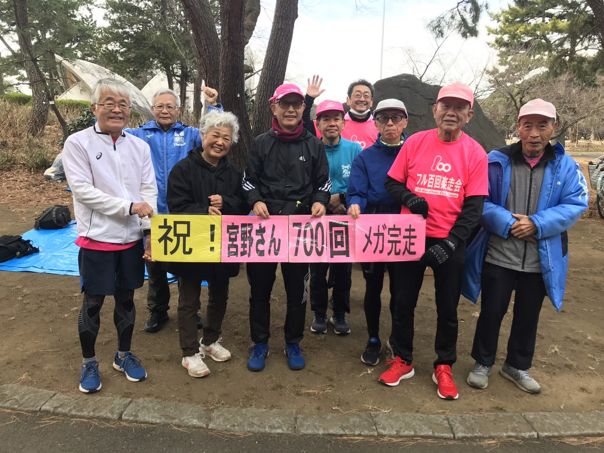

2026-01-11 04:59:25
2026年1月11日（日）平塚総合公園 曇り後晴 気温8時13.5度、12時記録忘れ
| No | 白鷺 | 氏名 | 種目 | タイム | フル百 |
|---|---|---|---|---|---|
| 1 | 19 | 伊藤 晶 | フル | 4:22:31 | 900 |
| 2 | 175 | 福井 康太 | フル | 4:37:09 | 841 |
| 3 | 403 | 飯田 和好 | フル | 5:59:01 | 881 |
| 4 | 349 | 宮野 繁 | フル | 8:47:32 | 854 |
| 5 | 30 | 竹田 昭彦 | フル | 9:56:58 | 3 |
| 6 | 98 | 田中 国貞 | 30.7km | 5:35:06 | 746 |
| 7 | 503 | 池尻 彰 | 25.6km | 4:48:15 | 894 |
| 8 | 317 | 石井 功 | 10.2km | 2:05:00 | 817 |
| 9 | 340 | 島田 八十美 | 6.8km | 1:25:00 | 830 |
| 10 | 333 | 山口 義治 | 6.8km | 1:50:48 | 827 |
| 11 | 145 | 植田 秀夫 | 5.1km | 1:03:00 | 787 |
| 12 | 203 | 坪田 弘美 | 5.1km | 1:23:08 | 148 |
| 13 | 208 | 古橋 和子 | 1.7km | 0:25:00 | 565 |

2026年最初の月例白鷺マラソン大会が開催されました。
恒例の竹田さん提供の金箔入り松竹梅で乾杯、そして
今日でメガマラソン700回達成される宮野繁さんを中心に記念写真撮影を行いました。
竹田さんからは乾杯の清酒とは別に、参加者全員に金箔入り1合瓶をいただきました。
ありがとうございました。
この後、宮野さんはフル完走、700回を達成されました。おめでとうございます。
このほか古橋さん、飯田さん、池尻さん、田中から色々、差し入れを頂きました。
ありがとうございました。
又この日は平塚市内一周駅伝が開催され、古橋さんのお孫さん（中3，女子）が
選手として出場され、第1走者として公園内を走られたので皆で声援を送りました。
担当 田中